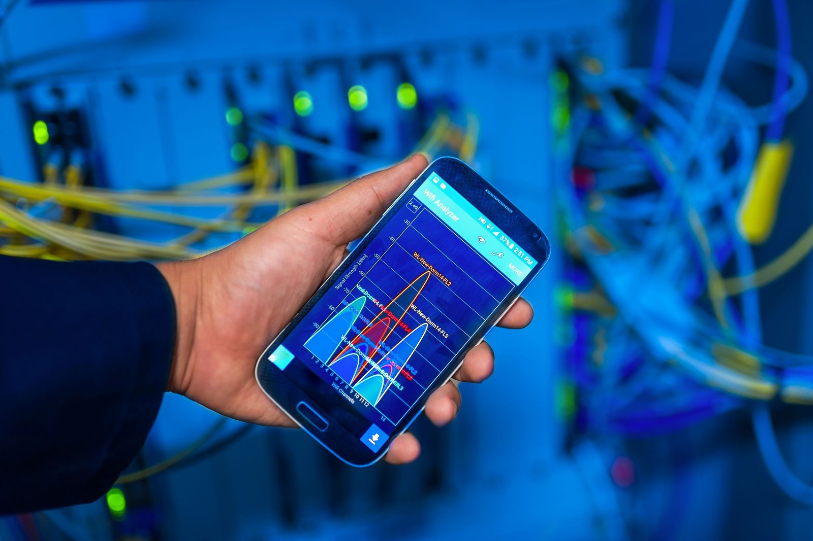
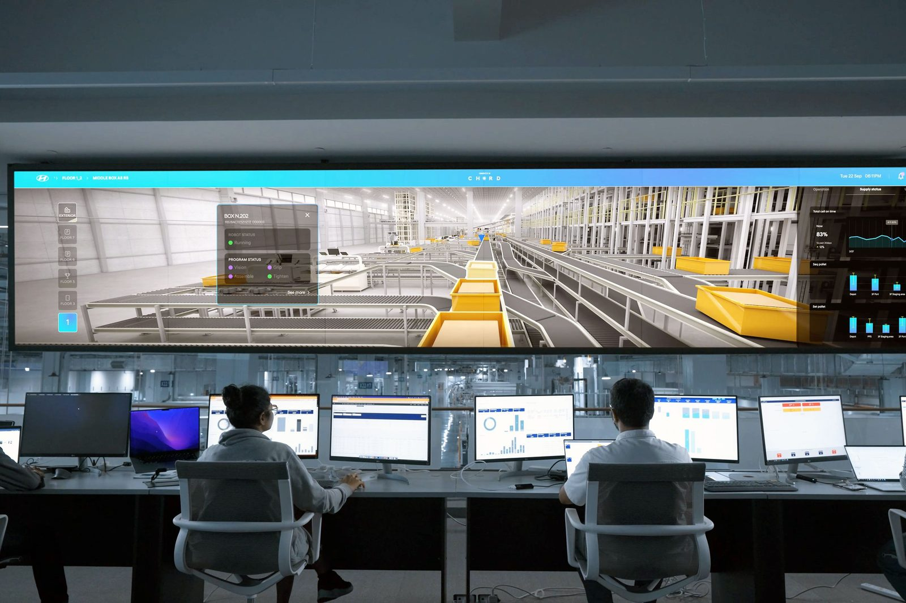

Perceive
AI-powered computer vision captures the physical reality with precision and scale.
AI vision scan
The platform
From physical perception to continuous reconciliation, RackTrack turns rack data into verified infrastructure intelligence - synced to every system your teams already use.
Principles
RackTrack unifies the physical and digital layers of your infrastructure, delivering trusted, real-time intelligence you can act on.

AI-powered computer vision captures the physical reality with precision and scale.
AI vision scan
We reconcile data from every source into one verified, living model of your infrastructure.
Data fusion · De-duplication · Continuous verification

Actionable intelligence delivered anywhere, empowering your teams to move faster and operate with confidence.
Mobile-first · Real-time · Workflow automation
3D topology
RackTrack reads rack imagery to build a continuously reconciled digital twin - switches, patch panels, servers, port activity, LED state, and cable routes - turning one cabinet sweep into verified infrastructure intelligence.
Select a reading
Reading the cabinet top to bottom. Each device registers as the sweep passes it.
Every intelligence surface in RackTrack is powered by one continuous workflow - perceive, cognize, connect, twin, reconcile, and secure.
Capture rack-facing visual evidence that identifies device placement, rack-unit position, labels, visible ports, and front-panel state from a guided sweep.
Classify switches, servers, patch panels, PDUs, controllers, and labels into structured asset records without manual transcription.
Map visible port usage, cable paths, link indicators, and active or unused connections against the physical rack evidence.
Connect rack position, device relationships, ports, and cabling context into a verified topology view teams can inspect and reconcile.
Compare every new scan with CMDB, DCIM, asset, and network records so changes, drift, and missing fields stay visible.
Surface device-level risk signals, missing evidence, firmware context, and audit gaps from the verified infrastructure record.
Next step
We'll run a guided sweep on a single rack or row and show the reconciled output against your CMDB and network records.
Request platform brief